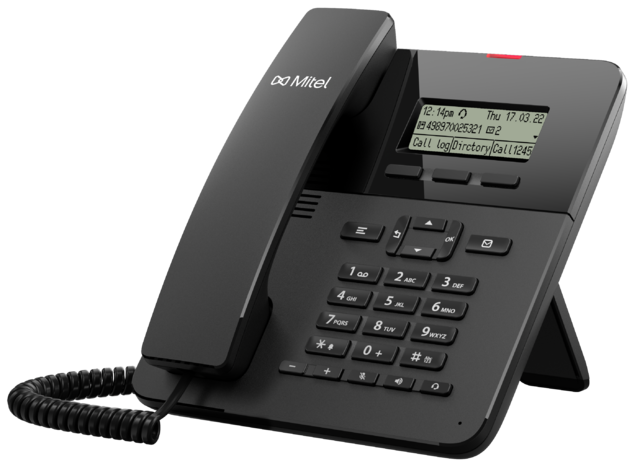
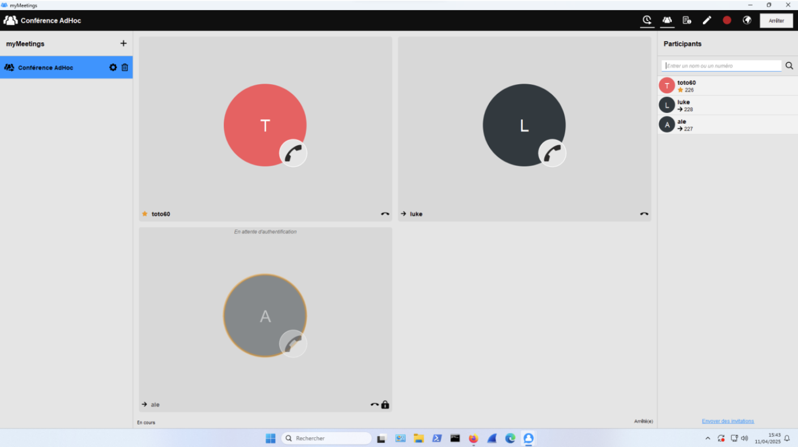

L’objectif de ce projet était de configurer un système de téléphonie d’entreprise à l’aide de la solution logicielle Unify OpenScape Business S.
Réalisé en groupe de trois dans le cadre de 5 TP de téléphonie à l’IUT, ce projet a été conduit de manière semi-autonome avec un appui méthodologique fourni par des assistants de configuration et une documentation en ligne.
La première étape a consisté à restaurer une configuration de base sur le CallServer, puis à procéder au câblage des téléphones IP, alimentés via des switchs PoE.
Ensuite, nous avons défini les abonnés et associé différents types de terminaux (téléphones propriétaires, SIP, softphones) en adaptant les paramètres de signalisation (TFA ou SIP).
J’ai personnellement configuré un téléphone SIP et un softphone, en m’assurant de la bonne correspondance des identifiants et des codecs utilisés, tout en réalisant des captures d’échanges via Wireshark pour analyser la signalisation SIP et le trafic RTP.
Nous avons également mis en place un Trunk SIP pour établir des communications avec l’extérieur via un fournisseur de services (ITSP).
Ce point a représenté un défi technique, notamment pour assurer l’affichage du bon numéro et pour configurer les appels entrants avec des numéros SDA.
La gestion des licences s’est avérée critique pour que les appels sortants/internes fonctionnent correctement.

La configuration de services téléphoniques avancés comme les groupes d’appels, le renvoi conditionnel, la messagerie vocale, ainsi que l’intégration d’un assistant logiciel comme MyPortal a permis de mieux appréhender les usages professionnels d’un système de téléphonie unifiée.
Par exemple, MyPortal offre des fonctionnalités telles que la gestion de présence, le click-to-call, le journal d’appels et la messagerie instantanée.
Enfin, nous avons exploré des fonctions avancées comme la messagerie unifiée (envoi de mail automatique lors de la réception d’un message vocal), l’intégration de téléphones mobiles, et la gestion multi-sites, illustrant comment une solution VoIP peut s’adapter à des contextes professionnels variés.
Ce projet m’a permis de développer deux compétences clés : ma capacité à appréhender des systèmes complexes de manière autonome, et ma rigueur dans la configuration de réseaux et de services téléphoniques.
Grâce à ce TP, j’ai renforcé ma compréhension des architectures VoIP modernes et de leur intégration dans les infrastructures informatiques des entreprises.